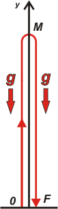

|
NO ME SALEN
PROBLEMAS RESUELTOS DE FÍSICA DEL CBC
(Movimiento uniformemente variado)
|
|

|
 |
NMS c3.50- Responda verdadero o falso y justifique.
a) Cuando en un tiro vertical hacia arriba el
proyectil alcanza su máxima altura, su aceleración
es cero.
b) En el vacío no hay gravedad.
c) En un tiro vertical hacia arriba el movimiento
es primero desacelerado y luego acelerado,
entonces la aceleración cambia de signo.
d) Si se sueltan una pluma y una piedra dentro
de un tubo en cuyo interior se hizo vacío, ambos
objetos caen a la par.
e) Hay casos en que, en cierto instante, la velocidad
es cero y la aceleración es distinta de cero. |
|
Ok, vamos de a una, no les tenemos miedo.
|
a) Cuando en un tiro vertical hacia arriba el proyectil alcanza su máxima altura, su aceleración es cero.
Esto es más falso que billete con San Martín riendo. Cuando un cuerpo se mueve libremente en un tiro vertical y llega a su altura máxima... por un instante, y sólo un instante, su velocidad se anula. Justo en ese instante cambia de sentido (de arriba hacia abajo) pasando por cero. Pero su aceleración ¡NO!, y es gracias a ella que puede realizar ese cambio de velocidad. Su aceleración, por el contrario, es CONSTANTE en todo el recorrido tanto de ida como de vuelta y también en ese misterioso instante de la altura máxima. No sólo es constante: su valor es conocido y aproximadamente igual a 10 m/s²; la llamamos aceleración de la gravedad y la simbolizamos con la letra g. | |  |
b) En el vacío no hay gravedad.
Esto es tan falso como el psicoanálisis. ¿Qué tiene que ver el vacío con la gravedad? Sencillamente NADA. La gravedad es la atracción mutua de los cuerpos que, cuando son muy masivos, produce aceleraciones apreciables. La caída de los cuerpos en la superficie de la Tierra, por ejemplo, es un efecto de la gravedad. Si viniese un ejército de alienígenas con una aspiradora gigante para llevarse nuestro aire a su desvencijado y distante planeta, y se llevaran hasta la última molécula de nuestra maltratada atmósfera, y no quedara nada, o sea, quedara VACIO... aún así la cinemática de los cuerpos seguiría siendo muy parecida a lo que es ahora. Las monedas caerían de nuestros bolsillos y la gente se suicidaría arrojándose desde el octavo piso. La gravedad no necesita medio material para manifestarse.
Supongo que este malentendido surge de asimilar la palabra VACIO con el concepto de espacio interestelar. Cuando los alienígenas se van huyendo de nuestros ejércitos con la atmósfera robada en las bodegas de su flota, viajan por lugares donde no hay gravedad (o es tan pequeña que ni se nota) y además tampoco hay nada, o sea, viajan por el vacío. Pero nadie se piense que no hay gravedad porque están en el vacío: no hay gravedad porque están lo suficientemente lejos de cuerpos masivos como planetas o estrellas. ¡Estos alienígenas hijos de la remil %#$@#&! |
|
 |
c) En un tiro vertical hacia arriba el movimiento es primero desacelerado y luego acelerado, entonces la aceleración cambia de signo.
¿Todas falsas tocaron? Sí... ¡esta también es falsa!, como promesa de novios... lo que es falso en esta afirmación es la última proposición: la aceleración cambia de signo. La primera parte es ambigua: utiliza términos que pueden querer decir distintas cosas según el contexto. Hay más de esos términos: retardado, frenado, y otros. Suelen ser bastante descriptivos (y despectivo, uno de ellos), pero en física conviene ser lo más preciso posible.
Entonces hablamos sólo de aceleración, y debido a su carácter vectorial tiene una dirección y un sentido. Apunta para allá o para acá. Eso se traduce, cuando lo expresamos dentro de un sistema de referencia (SR), en un signo, y así tendremos aceleración positiva o aceleración negativa. Ese signo nada tiene que ver con lo que le está ocurriendo al móvil... sólo refleja el capricho de quien eligió el SR. Un móvil puede estar frenando bruscamente y su aceleración puede ser tanto positiva como negativa. Otro puede estar jugando una picada con el de al lado y lo mismo: su aceleración puede ser positiva o negativa. Eso no depende de lo que haga el móvil, depende de la elección del SR.
Concluyendo: en un tiro vertical la aceleración es constante para todo el viaje de ida y vuelta... suba o baje, el signo de la aceleración no cambia. Y será positivo o negativo según tengas ganas de estudiar el movimiento con un SR que apunte para arriba o uno que apunte para abajo.
Ya sé que no me creíste... pero es así. |
|
 |
d) Si se sueltan una pluma y una piedra dentro de un tubo en cuyo interior se hizo vacío, ambos objetos caen a la par.
¡Al fin una verdadera! En uno de los primeros viajes a la Luna, un astronauta frente a la cámara y para todos los hinchas de Boca que lo miraban por TV, junto con los incrédulos de la física y las leyes del universo, soltó una pluma y un martillo y los dos cayeron juntitos (podés verlo acá). Allá en la Luna no hay aire que frene más a uno que a otro, por lo tanto, ambos responden al mandato gravitatorio lunar con igual disciplina. Acá en la Tierra también podemos lograrlo haciendo vacío en un tubo de vidrio (de vidrio, para poder ver lo que ocurre adentro). El experimento lo ideó Newton hace 300 años y no es inusual que lo repitan en varios establecimientos educativos.
50 años antes, Galileo ya sospechaba que todos los cuerpos debían caer con la misma aceleración independientemente de su masa; entonces subió hasta la terraza de la Torre de Pisa, avisó a la gente que pasaba por abajo, y soltó dos bolas de distinta masa que llegaron casi juntas al suelo... ante la mirada atónita de los boquenses y otros piseños igualmente ignorantes. |
|
 |
e) Hay casos en que, en cierto instante, la velocidad es cero y la aceleración es distinta de cero.
¡Loco! ¡Me quieren volver loco! ¿Es que no leyeron la respuesta a la primera pregunta? |
|
 |
| |
|
Algunos derechos reservados.
Se permite su reproducción citando la fuente. Última actualización oct-06. Buenos Aires, Argentina.
|
|
| |
| |
|